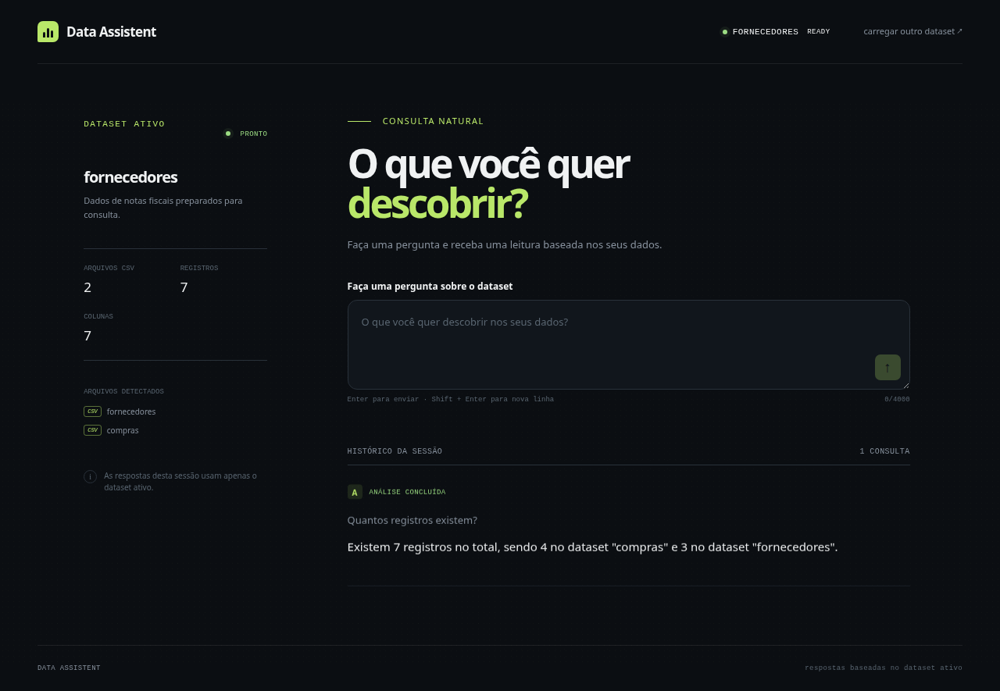

O Data Assistent recebe CSV ou ZIP pela Interface A. O FastAPI cria sessão UUID, valida/extrai o conteúdo, reconhece CSVs e dicionario.csv. Na Interface B, a pergunta chega ao QueryService, que orquestra LangChain, Gemini e as tools describe_data/query_data. Respostas estruturadas podem gerar tabela e gráfico no frontend.
React → HttpDataAssistantGateway → FastAPI → DatasetService/QueryService → agente LangChain/Gemini → tools → DataManager isolado → QueryResponse → React.
LangChain faz o binding de tools e o loop de mensagens. O prompt exige descoberta dos datasets e proíbe invenções. Há limites de ZIP, proteção contra traversal/symlink, UUID por sessão e nenhuma chave no frontend.
O fixture contém compras.csv, fornecedores.csv e dicionario.csv com arquivo,coluna,descricao. O dicionário é metadado e não é contado como dataset.
A consulta real retornou 7 registros totais, sendo 4 em compras e 3 em fornecedores.
O teste usou setInputFiles, FastAPI e Vite reais, sem mocks.


A primeira pergunta real retornou count 4. A segunda chamada da tentativa de quatro perguntas expirou no provedor Gemini após retries. Portanto não há afirmação manual de respostas, tabela ou gráfico, e a certificação formal permanece bloqueada.
python3 -m venv .venv source .venv/bin/activate pip install -r requirements.txt uvicorn api.main:app --reload cd frontend && npm ci && npm run dev